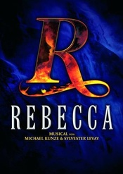

蝴蝶梦
内容简介：
- 《蝴蝶梦》是德国音乐剧作品，原名《Rebecca》，改编自达夫妮·杜穆里埃的成名作，发表于1938年。达夫妮·杜穆里埃在本书中成功地塑造了一个颇富神秘色彩的女性Rebecca的形象。主人公Rebecca于小说开始时即已死去，从未在书中出现，却时时处处音容宛在，并能通过其忠仆、情夫等继续控制曼陀丽庄园，直至最后将这个庄园烧毁。一方面是缠绵悱恻的怀乡忆旧，另一方面是阴森压抑的绝望恐怖，加之全书悬念不断，使该书成为多年畅销不衰的浪漫主义名著。音乐剧《蝴蝶梦》于2006年在维也纳首演，之后在德国、荷兰、芬兰、丹麦、瑞士等国家上演。